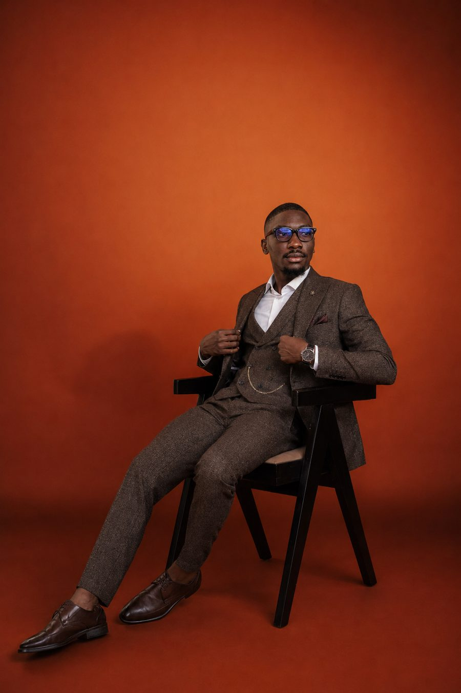
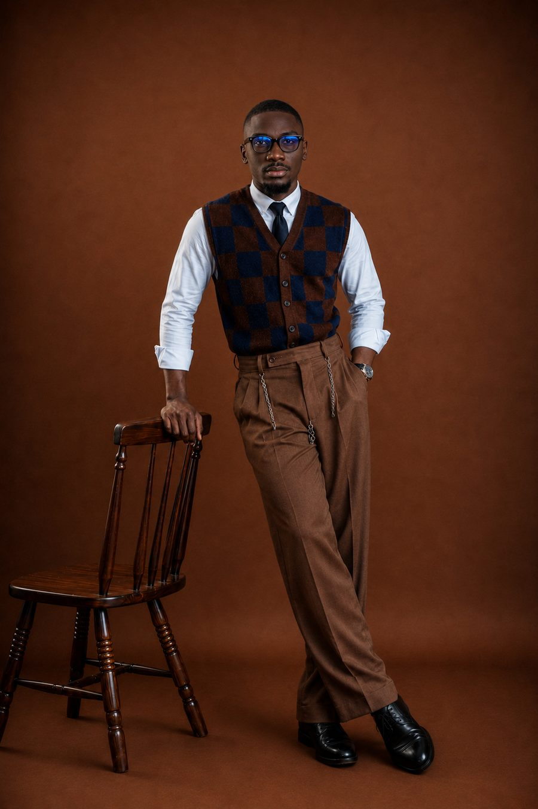

Computer Science graduate focused on software development, data analysis, and IT support, with hands-on experience in CRM systems, technical support, data management, customer service, and remote operations.


I enjoy solving practical problems with code, data, and dependable technical support.
I graduated from Ajayi Crowther University with a B.Sc. in Computer Science (Second Class Upper, CGPA 3.78). Since then, I have applied that foundation across ICT support, data management, customer service, and remote operations. My experience includes maintaining computer systems, resolving ICT requests, managing high-volume records, and working with CRM and reporting tools.
My primary career direction is software development and data. I work with Python, Java, SQL, HTML, CSS, and JavaScript, while my experience with Salesforce, SPSS, Excel, Google Sheets, and end-user support gives me a broader understanding of how technology supports real business needs.
I am seeking entry-level opportunities in software development, data analysis, and IT support. I am also available for remote roles in data entry, customer support, virtual assistance, and administrative operations where accuracy, communication, and digital skills are valued.
Obafemi Awolowo University (OAU)
Ajayi Crowther University, Oyo State · CGPA 3.78 / 5.00
Command Day Secondary School, Mokola, Ibadan
As Corpers Liaison Officer, Caleb was consistently honest, reliable and handworking the kind of person I'd rehire without hesitation.
Caleb completed his ICT internship with satisfactory performance, pursuing the work enthusiastically and showing a genuine willingness to learn.
Elected Corpers Liaison Officer by his peers, Caleb showed exceptional dedication and discipline, working efficiently under pressure throughout his service year.